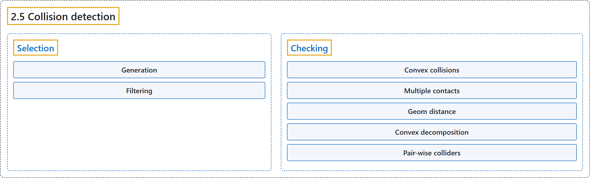

2.5 Collision detection
Classification

Glossary
| Term | Definition | 中文翻译 | Source |
|---|---|---|---|
| 2.5 Collision detection 碰撞检测 |
(context) "Collision detection operates on geoms, which are geometric entities rigidly attached to the underlying bodies." | （语境）碰撞检测作用于 geom，即刚性附着在底层刚体上的几何实体。 | Google DeepMind, n.d., "Collision detection", para. 1 |
| Selection 选择 |
"MuJoCo has flexible mechanisms for deciding which geom pairs are checked in detail." | MuJoCo 有灵活的机制来决定哪些 geom 对要做详细检查。 | Google DeepMind, n.d., "Selection", para. 1 |
| Generation 生成 |
"First we generate a list of candidate geom pairs by merging from two sources: pairs of bodies that might contain colliding geoms and the explicit list of geom pairs defined with the pair element in MJCF." | 首先，我们合并两个来源，生成候选 geom 对列表：可能包含碰撞 geom 的刚体对，以及用 MJCF 中 pair 元素定义的显式 geom 对列表。 | Google DeepMind, n.d., "Selection", item 1 |
| Broad-phase collision detection 粗阶段碰撞检测 |
"The body pairs are generated via broad-phase collision detection based on a modified sweep-and-prune algorithm." | 刚体对通过基于改进的扫掠剪枝算法的粗阶段碰撞检测生成。 | Google DeepMind, n.d., "Selection", item 1 |
| Mid-phase collision detection 中阶段碰撞检测 |
"Then, for each body pair, mid-phase collision detection is performed using a static bounding volume hierarchy (a BVH binary tree) of axis-aligned bounding boxes (AABB)." | 然后，对每个刚体对，用由轴对齐包围盒（AABB）构成的静态包围体层次结构（BVH 二叉树）进行中阶段碰撞检测。 | Google DeepMind, n.d., "Selection", item 1 |
| Filtering 过滤 |
"Next we apply four filters to the list generated in the previous step." | 接下来对上一步生成的列表应用四个过滤器。 | Google DeepMind, n.d., "Selection", item 2 |
| Checking 检查 |
"Detailed collision checking, also known as near-phase or narrow-phase collision detection, is performed by functions that depend on the geom types in the pair." | 详细的碰撞检查，也称为近阶段或窄阶段碰撞检测，由依赖于 geom 对类型的函数完成。 | Google DeepMind, n.d., "Checking", para. 1 |
| Convex collisions 凸碰撞 |
"All collisions involving pairs of geoms that do not have an analytic collider (e.g., meshes), are handled by one of two general-purpose convex collision detection (CCD) pipelines:" | 所有涉及没有解析碰撞器的 geom 对（例如网格）的碰撞，由两条通用凸碰撞检测（CCD）流水线之一处理： | Google DeepMind, n.d., "Convex collisions", para. 1 |
| native pipeline 原生流水线 |
"The native CCD pipeline (“nativeccd”) is implemented natively in MuJoCo, based on the Gilbert-Johnson-Keerthi and Expanding Polytope algorithms (GJK / EPA)." | 原生 CCD 流水线（“nativeccd”）在 MuJoCo 中原生实现，基于 Gilbert-Johnson-Keerthi 算法和扩展多胞体算法（GJK / EPA）。 | Google DeepMind, n.d., "Convex collisions", item 1 |
| libccd pipeline libccd 流水线 |
"This legacy pipeline is based on the libccd library, and uses Minkowski Portal Refinement (MPR)." | 这条旧版流水线基于 libccd 库，使用闵可夫斯基入口细化（MPR）。 | Google DeepMind, n.d., "Convex collisions", item 2 |
| Multiple contacts 多接触点 |
"Both of MuJoCo’s CCD pipelines can return multiple points per contacting pair (“multiccd”)." | MuJoCo 的两条 CCD 流水线都能为每个接触对返回多个点（“multiccd”）。 | Google DeepMind, n.d., "Multiple contacts", para. 1 |
| multi-run pipeline 多次运行流水线 |
"Multiple contact points are found by rotating the two geoms by ±1e-3 radians around the tangential axes and re-running the collision routine." | 多个接触点的求法是把两个 geom 绕切向轴旋转 ±1e-3 弧度，然后重新运行碰撞例程。 | Google DeepMind, n.d., "Multiple contacts", item 1 |
| single-shot pipeline 单次流水线 |
"The single-shot pipeline is used in conjunction with the native CCD pipeline, i.e., when the nativeccd flag is enabled." | 单次流水线与原生 CCD 流水线配合使用，即在启用 nativeccd 标志时。 | Google DeepMind, n.d., "Multiple contacts", item 2 |
| Geom distance geom 距离 |
(context) "The narrow-phase collision functions described above drive the mj_geomDistance function and associated collision sensors." | （语境）上面介绍的窄阶段碰撞函数驱动 mj_geomDistance 函数及相关的碰撞传感器。 | Google DeepMind, n.d., "Geom distance", para. 1 |
| Convex decomposition 凸分解 |
"In order to model a non-convex object other than a height field, the user must decompose it into a union of convex geoms (which can be primitive shapes or meshes) and attach them to the same body." | 要建模高度场以外的非凸物体，用户必须把它分解为若干凸 geom 的并集（可以是基本形状或网格），并把它们附着到同一个刚体上。 | Google DeepMind, n.d., "Convex decomposition", para. 1 |
| Pair-wise colliders 成对碰撞器 |
(context) "The table below provides information about the colliders used for different geom pairs." | （语境）下表给出不同 geom 对所用碰撞器的信息。 | Google DeepMind, n.d., "Pair-wise colliders", para. 1 |
References
Google DeepMind. (n.d.). Computation. MuJoCo Documentation (Version 3.17.0). Retrieved October 31, 2026, from https://mujoco.readthedocs.io/en/stable/computation/index.html